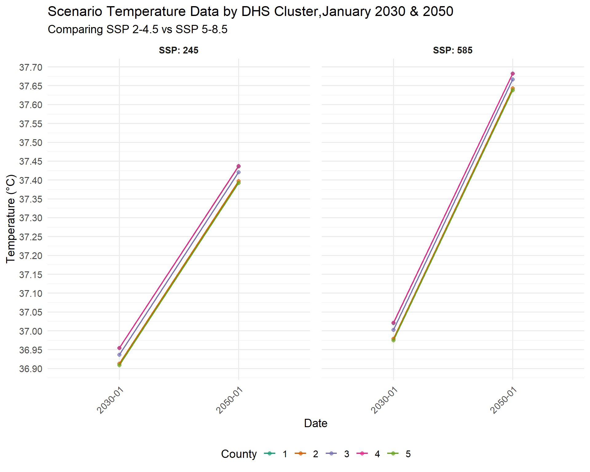
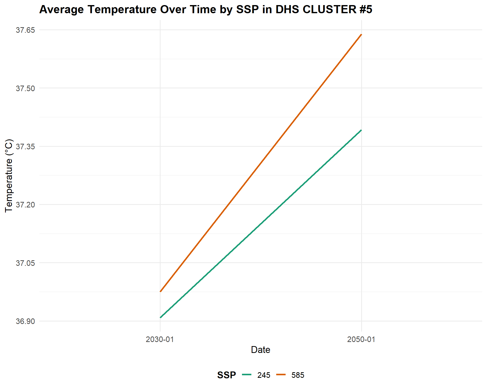

# Create list of paths to all individual raster files
projections_files_245_2030<- list.files("data/SSP_245_2030_Tmax", full.names = TRUE)
projections_files_585_2030<- list.files("data/SSP_585_2030_Tmax", full.names = TRUE)
projections_files_245_2050<- list.files("data/SSP_245_2050_Tmax", full.names = TRUE)
projections_files_585_2050<- list.files("data/SSP_585_2050_Tmax", full.names = TRUE)We now return to our series on using methods of future estimation in spatial health research. The third post in this series introduces CHC-CMIP6 data by the Climate Hazards Center at UC Santa Barbara. We will demonstrate how you can read these data into R to create informative visualizations. Kenya will be our example context, continuing from our previous post in this series.
Long-term Climate Projections
Now that we’ve shown how we can use forecasts, predictions and scenarios to explore future demographic and health patterns, how does climate change fit in?
We discussed Subseasonal to seasonal (S2S) forecasts earlier in this series, which extend short-term weather forecasts from two weeks to two years into the future. Climate change patterns, however, may shift over many years, and often, climate researchers are predicting much further into the future. These predictions can assist policymakers in thinking about how what they do today may impact the future.
The Intergovernmental Panel on Climate Change (IPCC) is the UN agency that studies climate change, and its annual Conference of Parties (COP) meetings bring together experts in climate change, agriculture, demography, health and other fields to help governments make pledges to increase resources to address climate change. IPCC synthesizes global climate research into comprehensive, authoritative IPCC reports that represent the scientific consensus on climate change, its impacts, and how human activities affect greenhouse gas emissions, providing the foundation for climate policy decisions.
To understand how climate change may shift in the long-term, the IPCC and researchers around the world use the Shared Socioeconomic Pathways (SSPs) to understand our possible future worlds. For example, SSP 5-8.5 assumes a world where we fail to cut emissions or switch to clean energy, the population grows, and emissions increase rapidly. SSP 2-4.5 is considered the “middle of the road” scenario, a future where greenhouse gas emissions hover around current levels and perhaps start declining but don’t reach net-zero by 2100. The SSP’s consider challenges to mitigation (bringing down emissions) and adaptation (taking steps to reduce exposure and harm). Using the SSPs, scientists can explore how climate and demographic patterns will shift under each possible future scenario.
The figure below summarizes each single SSP, which is considered the starting point. Read more at the link below the figure to understand the different kinds of assumptions that can be applied to each SSP (i.e. the ‘-4.5’ that comes after ‘2’ in SSP 2-4.5).
Figure: The five SSPs and the associated challenges to mitigation and adaptation. (https://climatedata.ca/resource/understanding-shared-socio-economic-pathways-ssps/)
The Couple Model Intercomparison Project Phase 6 (CMIP-6)
The Coupled Model Intercomparison Project Phase 6 (CMIP6) is a global collaboration among climate modeling centers. CMIP6 simulates the earth’s climate system, including the atmosphere, oceans and land surface, across each SSP. Each model starts by running historical data from the past 100-150 years, to see if they can reproduce past climate trends. Then, they feed the model different possible futures through the SSPs. Lastly, the models simulate the future climate, often up to the year 2100 or even 2300, and simulate how temperatures may rise, rainfall patterns may change, or extreme events may increase. Because many research teams around the world are running these models independently, CMIP6 can explore dozens of different models using the same standardized scenarios for comparability.
Once the simulations are done, scientists can compare the models, average the results, and assess uncertainty levels. The final CMIP6-informed climate projections can be used to guide IPCC reports and guidance, as well as country level national determined contributions (NDCs), adaptation plans, and risk assessments, to guide policy decisions on the ground. To be useful at this level, we need spatially and temporally detailed datasets, that downscale the full model down to more localized estimates and patterns.
What is downscaling?
CMIP6 projections are global, and for use at the national or subnational level are often too coarse. Downscaling methods can be used to create finer, more locally relevant climate information to capture regional trends and be useful for more local policy. Downscaling can be done using statistical methods (such as bias correction and spatial disaggregation) or dynamic approaches (such as regional climate models). The result is a high-resolution climate projection that can be used by researchers and policymakers.
CHC researchers downscaled the CMIP6 from global to more local levels, if you are interested in their methodology please read this paper.
We will be using a dataset created by researchers at the Climate Hazards Center (CHC). We used observed climate data from CHC in these earlier posts: 1) Flexible Workflows with CHIRTS Temperature Data and 2) Attaching CHIRPS Precipitation Data to DHS Surveys. The format of the projected data is the same as the historical data. This is because the projected data is calculated by adding a daily delta to observed historical data, which is the amount of ‘change’ a climate value is expected to experience.
CHC-CMIP6 Datasets
The Climate Hazards Center uses CMIP6 outputs and tailors them for more applied research needs. They recently downscaled CMIP6 climate projections to produce high-resolution, bias-corrected datasets that are more useful for local applications. They produced daily 0.05ᵒ gridded data of the Climate Hazards InfraRed Temperature with Stations (CHIRTS) temperature product. So far, CHIRTS has been a historical dataset with daily maximum temperature estimates from 1981-2024, but now we can explore future temperature estimates for 2030 and 2050.
We can use CHC-CMIP data to predict child health outcomes. As this blog has demonstrated, the Demographic and Health Surveys have important, nationally representative information on child health and well-being from countries that often lack detailed health metrics. The DHS includes GPS coordinates for communities where households are sampled, and this information can then be used to link with CHC-CMIP6 downscaled projections by location. We will explore this in our next post in this series.
How to Access and Read the Scenario Data into R
For this exercise we will work with temperature data for one month, January, which is during the hot season in Kenya for each scenario and time-frame. If you’re interested in working with rainfall data, you can adapt this code, using the previous CHIRPS post (see above) to download projected rainfall data.
Note
You can find the Tmax files for 2030 for 2-4.5 here and 5-8.5 here. You can find the Tmax files for 2050 for 2-4.5 here and 5-8.5 here. Note: both the projections for 2030 and 2050 come from the files labeled for the year of 2016. As we mentioned earlier, the projection data is calculated by adding a daily delta to each observation.
Once those files are downloaded we will create a file path to .tif files.
Then we will load the files as multiple layers in a raster stack, similar to the workflow demonstrated in this earlier post on how to use precipitation data from the Climate Hazards Center.
library(terra)
# Load each set of .tif files into into its own single raster stack
proj_temp_raster_245_2030 <- rast(projections_files_245_2030)
proj_temp_raster_585_2030 <- rast(projections_files_585_2030)
proj_temp_raster_245_2050 <- rast(projections_files_245_2050)
proj_temp_raster_585_2050 <- rast(projections_files_585_2050)The scenario data is provided at the global level, so first we must crop this raster to only cover Kenya. We can do this by using a shapefile for Kenya available on from the Humanitarian Data Exchange, which also has county-level geocodes. First, we read in this shapefile.
library(sf)
#read in Kenya ADM1 shapefiles
ken_ADM1_borders <- st_read(
"data/geoBoundaries-KEN-ADM1-all/geoBoundaries-KEN-ADM1.shp",
quiet = TRUE)
#make sure the projection systems for our shapefiles and our raster data match
crs(ken_ADM1_borders)
#> [1] "GEOGCRS[\"WGS 84\",\n ENSEMBLE[\"World Geodetic System 1984 ensemble\",\n MEMBER[\"World Geodetic System 1984 (Transit)\"],\n MEMBER[\"World Geodetic System 1984 (G730)\"],\n MEMBER[\"World Geodetic System 1984 (G873)\"],\n MEMBER[\"World Geodetic System 1984 (G1150)\"],\n MEMBER[\"World Geodetic System 1984 (G1674)\"],\n MEMBER[\"World Geodetic System 1984 (G1762)\"],\n MEMBER[\"World Geodetic System 1984 (G2139)\"],\n ELLIPSOID[\"WGS 84\",6378137,298.257223563,\n LENGTHUNIT[\"metre\",1]],\n ENSEMBLEACCURACY[2.0]],\n PRIMEM[\"Greenwich\",0,\n ANGLEUNIT[\"degree\",0.0174532925199433]],\n CS[ellipsoidal,2],\n AXIS[\"geodetic latitude (Lat)\",north,\n ORDER[1],\n ANGLEUNIT[\"degree\",0.0174532925199433]],\n AXIS[\"geodetic longitude (Lon)\",east,\n ORDER[2],\n ANGLEUNIT[\"degree\",0.0174532925199433]],\n USAGE[\n SCOPE[\"Horizontal component of 3D system.\"],\n AREA[\"World.\"],\n BBOX[-90,-180,90,180]],\n ID[\"EPSG\",4326]]"
crs(proj_temp_raster_245_2030)
#> [1] "GEOGCRS[\"WGS 84\",\n ENSEMBLE[\"World Geodetic System 1984 ensemble\",\n MEMBER[\"World Geodetic System 1984 (Transit)\"],\n MEMBER[\"World Geodetic System 1984 (G730)\"],\n MEMBER[\"World Geodetic System 1984 (G873)\"],\n MEMBER[\"World Geodetic System 1984 (G1150)\"],\n MEMBER[\"World Geodetic System 1984 (G1674)\"],\n MEMBER[\"World Geodetic System 1984 (G1762)\"],\n MEMBER[\"World Geodetic System 1984 (G2139)\"],\n MEMBER[\"World Geodetic System 1984 (G2296)\"],\n ELLIPSOID[\"WGS 84\",6378137,298.257223563,\n LENGTHUNIT[\"metre\",1]],\n ENSEMBLEACCURACY[2.0]],\n PRIMEM[\"Greenwich\",0,\n ANGLEUNIT[\"degree\",0.0174532925199433]],\n CS[ellipsoidal,2],\n AXIS[\"geodetic latitude (Lat)\",north,\n ORDER[1],\n ANGLEUNIT[\"degree\",0.0174532925199433]],\n AXIS[\"geodetic longitude (Lon)\",east,\n ORDER[2],\n ANGLEUNIT[\"degree\",0.0174532925199433]],\n USAGE[\n SCOPE[\"Horizontal component of 3D system.\"],\n AREA[\"World.\"],\n BBOX[-90,-180,90,180]],\n ID[\"EPSG\",4326]]"Then we crop each raster according to the boundaries of the said shapefile.
#crop each raster so we only have the Tmax information for Kenya
#2-4.5-2030
ken_Tmax_245_2030<- crop(proj_temp_raster_245_2030, ken_ADM1_borders, snap = "out")
#5-8.5- 2030
ken_Tmax_585_2030<- crop(proj_temp_raster_585_2030, ken_ADM1_borders, snap = "out")
#2-4.5-2050
ken_Tmax_245_2050<- crop(proj_temp_raster_245_2050, ken_ADM1_borders, snap = "out")
#5-8.5- 2050
ken_Tmax_585_2050<- crop(proj_temp_raster_585_2050, ken_ADM1_borders, snap = "out")Now we have cropped our data scenario data to Kenya. If we enter the name of one of the cropped objects we have created you can see the max temperature is 44.85 degrees Celsius.
ken_Tmax_245_2030
#> class : SpatRaster
#> dimensions : 204, 161, 31 (nrow, ncol, nlyr)
#> resolution : 0.05, 0.05 (x, y)
#> extent : 33.9, 41.95, -4.750001, 5.449999 (xmin, xmax, ymin, ymax)
#> coord. ref. : lon/lat WGS 84 (EPSG:4326)
#> source(s) : memory
#> names : 2030_~01.01, 2030_~01.02, 2030_~01.03, 2030_~01.04, 2030_~01.05, 2030_~01.06, ...
#> min values : -9999.00000, -9999.00000, -9999.00000, -9999.00000, -9999.00000, -9999.00000, ...
#> max values : 44.42629, 42.74142, 43.23469, 41.90297, 41.62671, 43.20387, ...Our minimum value is listed at -9999, indicating missing information. We will need to drop these values by labeling any negative values as NA’s.
# Set pixels with a value less than 0 to NA
ken_Tmax_245_2030[ken_Tmax_245_2030 < 0] <- NA
ken_Tmax_245_2050[ken_Tmax_245_2050 < 0] <- NA
ken_Tmax_585_2030[ken_Tmax_585_2030 < 0] <- NA
ken_Tmax_585_2050[ken_Tmax_585_2050 < 0] <- NAHow to Temporally Aggregate the Data
Now we must temporally aggregate our data. First we will manually add date information to our data since the metadata does not include date information. See how we get NA’s when we use the following code.
time(ken_Tmax_245_2030)
#> [1] NA NA NA NA NA NA NA NA NA NA NA NA NA NA NA NA NA NA NA NA NA NA NA NA NA
#> [26] NA NA NA NA NA NAFortunately, the original .tif files are labeled by their date, so we can manually input the date information using the following code.
#temporally aggregate the scenario data
library(lubridate)
#>
#> Attaching package: 'lubridate'
#> The following objects are masked from 'package:terra':
#>
#> intersect, union
#> The following objects are masked from 'package:base':
#>
#> date, intersect, setdiff, union
# Convert strings to Date objects for the 2030 and 2050 timeframes
start2030 <- lubridate::ymd("2030-01-01")
end2030 <- lubridate::ymd("2030-1-31")
start2050 <- lubridate::ymd("2050-01-01")
end2050 <- lubridate::ymd("2050-1-31")
# Set time as a daily sequence of the month of January
#2-4.5:2030
time(ken_Tmax_245_2030) <- seq(start2030, end2030, by = "days")
#5-8.5: 2030
time(ken_Tmax_585_2030) <- seq(start2030, end2030, by = "days")
#2-4.5:2050
time(ken_Tmax_245_2050) <- seq(start2050, end2050, by = "days")
#5-8.5: 2050
time(ken_Tmax_585_2050) <- seq(start2050, end2050, by = "days")Now we can confirm if the code works.
time(ken_Tmax_245_2030)
#> [1] "2030-01-01" "2030-01-02" "2030-01-03" "2030-01-04" "2030-01-05"
#> [6] "2030-01-06" "2030-01-07" "2030-01-08" "2030-01-09" "2030-01-10"
#> [11] "2030-01-11" "2030-01-12" "2030-01-13" "2030-01-14" "2030-01-15"
#> [16] "2030-01-16" "2030-01-17" "2030-01-18" "2030-01-19" "2030-01-20"
#> [21] "2030-01-21" "2030-01-22" "2030-01-23" "2030-01-24" "2030-01-25"
#> [26] "2030-01-26" "2030-01-27" "2030-01-28" "2030-01-29" "2030-01-30"
#> [31] "2030-01-31"Now that we know we have temporal information, we aggregate our data to the monthly level. In this example we will pull the monthly averages.
#aggregate into monthly averages
#2-4.5:2030
ken_Tmax_245_2030_yearmonth<-tapp(ken_Tmax_245_2030, fun=mean, index="yearmonth")
#5-8.5:2030
ken_Tmax_585_2030_yearmonth<-tapp(ken_Tmax_585_2030, fun=mean, index="yearmonth")
#2-4.5:2050
ken_Tmax_245_2050_yearmonth<-tapp(ken_Tmax_245_2050, fun=mean, index="yearmonth")
#5-8.5:2050
ken_Tmax_585_2050_yearmonth<-tapp(ken_Tmax_585_2050, fun=mean, index="yearmonth")Aggregate to the Spatial Level
Now that our data is temporally aggregated, we must aggregate it at the spatial level. Like we have used a DHS cluster buffer zone in the past, now we will transform Demographic and Health Survey (DHS) cluster GPS information into a 10-kilometer buffer zone. We use the same survey as the last post in this series: Kenya 2022.
First, we read in our DHS GPS data, which you can access on the DHS website.
ken_DHS_gps<-st_read("data/DHS_clusters/KEGE8AFL.shp")
#> Reading layer `KEGE8AFL' from data source
#> `C:\Users\lutti013\Documents\Blog\dhs-research-hub\posts\2025-09-05-forecasting-pt3\data\DHS_clusters\KEGE8AFL.shp'
#> using driver `ESRI Shapefile'
#> Simple feature collection with 1691 features and 20 fields
#> Geometry type: POINT
#> Dimension: XY
#> Bounding box: xmin: 33.96339 ymin: -4.633603 xmax: 41.87537 ymax: 4.930862
#> Geodetic CRS: WGS 84Next, we transform this into a 10-kilometer buffer zone. We use the UTM 37N reference system because it is best for Kenya.
# Project cluster locations to the UTM 37N reference system
ken_DHS_gps <- st_transform(ken_DHS_gps, crs = 21097)
#create buffer zone
ken_DHS_buffer <- st_buffer(ken_DHS_gps, dist = 10000)
#transform it back to ESPG 4326 for degrees of longitude and latitude
ken_DHS_buffer <- st_transform(ken_DHS_gps, crs = 4326)Now we will use the extract() function from the terra package to get spatial mean of the Tmax per DHS cluster buffer zone.
Code
#2-4.5:2030
ken_Tmax_245_2030_spatial_mean <- terra::extract(
ken_Tmax_245_2030_yearmonth, # Extract values for each month
ken_DHS_buffer, # Use Kenya 2022 DHS buffer zone
weights = TRUE,
fun = "mean", #get the spatial mean
na.rm = TRUE,
bind=TRUE)
#convert to a spatial frame
ken_Tmax_245_2030_spatial_mean_sf<-st_as_sf(ken_Tmax_245_2030_spatial_mean)
#5-8.5:2030
ken_Tmax_585_2030_spatial_mean <- terra::extract(
ken_Tmax_585_2030_yearmonth, # Extract values for each month
ken_DHS_buffer, # Use Kenya 2022 DHS buffer zone
weights = TRUE,
fun = "mean", #get the spatial mean
na.rm = TRUE,
bind=TRUE)
#convert to a spatial frame
ken_Tmax_585_2030_spatial_mean_sf<-st_as_sf(ken_Tmax_585_2030_spatial_mean)
#2-4.5:2050
ken_Tmax_245_2050_spatial_mean <- terra::extract(
ken_Tmax_245_2050_yearmonth, # Extract values for each month
ken_DHS_buffer, # Use Kenya 2022 DHS buffer zone
weights = TRUE,
fun = "mean", #get the spatial mean
na.rm = TRUE,
bind=TRUE)
#convert to a spatial frame
ken_Tmax_245_2050_spatial_mean_sf<-st_as_sf(ken_Tmax_245_2050_spatial_mean)
#5-8.5:2050
ken_Tmax_585_2050_spatial_mean <- terra::extract(
ken_Tmax_585_2050_yearmonth, # Extract values for each month
ken_DHS_buffer, # Use Kenya 2022 DHS cluster GPS file
weights = TRUE,
fun = "mean", #get the spatial mean
na.rm = TRUE,
bind=TRUE)
#convert to a spatial frame
ken_Tmax_585_2050_spatial_mean_sf<-st_as_sf(ken_Tmax_585_2050_spatial_mean)Visualization Demo
Now, let’s visualize the scenario data using both maps and graphics. From the above code, we have generated four different vectors of data: one for each scenario in 2030 and 2050. Next we will do some basic recoding and reformatting to ensure our variables are properly labeled before we merge the vectors, which we will need to do in order to visualize these differences on one graph.
First, we will convert our spatial frames, which we created above, to dataframe. Then we will label our temporal data based on which SSP it came from.
Code
#recodes
library(tidyverse)
#2-4.5:2030
ken_Tmax_245_2030_spatial_mean_df <- as.data.frame(ken_Tmax_245_2030_spatial_mean)
ken_Tmax_245_2030_spatial_mean_df<-ken_Tmax_245_2030_spatial_mean_df%>%
rename(ym_203001_245=ym_203001)
#5-8.5:2030
ken_Tmax_585_2030_spatial_mean_df <- as.data.frame(ken_Tmax_585_2030_spatial_mean)
ken_Tmax_585_2030_spatial_mean_df<-ken_Tmax_585_2030_spatial_mean_df%>%
rename(ym_203001_585=ym_203001)
#2-4.5:2050
ken_Tmax_245_2050_spatial_mean_df <- as.data.frame(ken_Tmax_245_2050_spatial_mean)
ken_Tmax_245_2050_spatial_mean_df<-ken_Tmax_245_2050_spatial_mean_df%>%
rename(ym_205001_245=ym_205001)
#5-8.5:2050
ken_Tmax_585_2050_spatial_mean_df <- as.data.frame(ken_Tmax_585_2050_spatial_mean)
ken_Tmax_585_2050_spatial_mean_df<-ken_Tmax_585_2050_spatial_mean_df%>%
rename(ym_205001_585=ym_205001)
Now that our data is labeled based on which SSP it came from, we combine all of the scenario data into one dataframe. If we were to skip the step in which we labeled the temporal data per SSP, we could mix up the 2030 and 2050 data.
After merging the data together, we will reshape the data to a long format, so our data is at the year-month level and is disaggregated per scenario. This means we have four observations, or rows, per DHS cluster.
#pivot the dataframe to make date long
combined_SSPs_long <- combined_SSP_all %>%
pivot_longer(
cols = contains ("ym_"), # specify the date columns as what need to be pivoted
names_to = "Date", # new column for date
values_to = "Tmax" # new column for Tmax
)
#print dataframe to illustrate the structure
combined_SSPs_long%>%
select(DHSCLUST, Tmax, Date)%>%
head(n=12)
#> # A tibble: 12 × 3
#> DHSCLUST Tmax Date
#> <dbl> <dbl> <chr>
#> 1 1 37.0 ym_203001_245
#> 2 1 37.0 ym_203001_585
#> 3 1 37.4 ym_205001_245
#> 4 1 37.7 ym_205001_585
#> 5 2 36.9 ym_203001_245
#> 6 2 37.0 ym_203001_585
#> 7 2 37.4 ym_205001_245
#> 8 2 37.6 ym_205001_585
#> 9 3 36.9 ym_203001_245
#> 10 3 37.0 ym_203001_585
#> 11 3 37.4 ym_205001_245
#> 12 3 37.7 ym_205001_585Following the reshaping, we will create a variable to differentiate which scenario the data comes from: 2-4.5 or 5-8.5. Then we will recode the date to remove the SSP labels that we added to the end.
#create a dichotomous variable for each scenario
combined_SSPs_long <- combined_SSPs_long %>%
mutate(SSP = case_when(
str_detect(Date, "585") ~ "585",
str_detect(Date, "245") ~ "245"
))
#recode date
combined_SSPs_long <- combined_SSPs_long %>%
mutate(year_month = str_extract(Date, "\\d{6}"))%>%
mutate(year_month = str_replace(str_extract(year_month, "\\d{6}"), "(\\d{4})(\\d{2})", "\\1-\\2"))In order to create a summary visualization, we need to make some trade-offs. There are 1692 different DHS clusters. In this example, we select the first five DHS cluster buffer zones, and create a line graph showing the differences in the projected Tmax for 2030 and 2050 per SSP.
Code
#select the first 5 DHS cluster locations for simplicity
combined_SSPs_long_select<-combined_SSPs_long%>%
filter(DHSCLUST<=5)
#convert DHS cluster to a factor variable
combined_SSPs_long_select$DHSCLUSTfactor<-as.factor(combined_SSPs_long_select$DHSCLUST)
library(ggplot2)
#ggplot code
SSPplot <- ggplot(combined_SSPs_long_select, aes(x = year_month, y = Tmax, color = DHSCLUSTfactor, group = DHSCLUSTfactor)) +
geom_line(size = .75) +
geom_point(size = 2, alpha = 0.7) + # Optional: add points for clarity
facet_wrap(~ SSP, ncol = 2, labeller = label_both) +
scale_color_brewer(palette = "Dark2") + # Higher contrast palette
scale_y_continuous(breaks = seq(32, 40, by = 0.05)) +
labs(
title = "Scenario Temperature Data by DHS Cluster,January 2030 & 2050",
subtitle = "Comparing SSP 2-4.5 vs SSP 5-8.5",
x = "Date",
y = "Temperature (°C)",
color = "County"
) +
theme_minimal(base_size = 14) +
theme(
legend.position = "bottom",
strip.text = element_text(face = "bold"),
panel.spacing = unit(1, "lines"),
axis.text.x = element_text(angle = 45, hjust = 1)
)
#> Warning: Using `size` aesthetic for lines was deprecated in ggplot2 3.4.0.
#> ℹ Please use `linewidth` instead.
SSPplot
This graph shows us cluster-level variation. Cluster 2 and 5 have the lowest projected values, while 1 and 4 have the highest.
Let’s look at the fifth cluster alone to zoom into the differences in temperature by scenario.
Code
combined_SSPs_long_select_5<-combined_SSPs_long%>%
filter(DHSCLUST=="5")
SSPplot2<-ggplot(combined_SSPs_long_select_5,aes(x = year_month, y = Tmax, color = SSP, group = SSP)) +
geom_line(size = 1.2) +
scale_color_manual(values = c("245" = "#1b9e77", "585" = "#d95f02")) +
scale_y_continuous(breaks = seq(36, 40, by =0.15)) + # Even more fine y-axis
labs(
title = "Average Temperature Over Time by SSP in DHS CLUSTER #5",
x = "Date",
y = "Temperature (°C)",
color = "SSP"
) +
theme_minimal(base_size = 14) +
theme(
legend.position = "bottom",
legend.title = element_text(face = "bold"),
plot.title = element_text(face = "bold")
)
SSPplot2
Now let’s map out this data. We will create a separate map for each year per scenario. First, let’s create a map for each SSP at 2030.
Code
library(ggspatial)
combined_SSPs_long_spatial<-left_join(ken_DHS_buffer, combined_SSPs_long)
#filter for only the 2030 values
combined_SSPs_long_spatial_2030<-combined_SSPs_long_spatial%>%
filter(year_month=="2030-01")
map2030<-ggplot(combined_SSPs_long_spatial_2030) +
geom_sf(aes(color = Tmax), size = 4, alpha = 0.8) + # Use color for points
geom_sf(data = ken_ADM1_borders, color = "black", fill = NA, linewidth = 0.4) +
facet_wrap(~ SSP, ncol = 2, labeller = label_both) +
scale_color_viridis_c(option = "plasma", direction = -1) +
labs(
title = "Projected Tmax by DHS Cluster in Kenya in January 2030, SSP 2-4.5 & SSP 5-8.5",
subtitle = "SSP",
color = "Tmax (°C)"
) +
theme_minimal(base_size = 14) +
theme(
strip.text = element_text(face = "bold"),
legend.position = "bottom",
panel.spacing = unit(1, "lines")
)
map2030Both SSPs predict varied temperatures in the West, and hotter temperatures in the East, at different levels of extremity. Now let’s create a map for each SSP at 2050.
Code
#filter for only the 2050 values
combined_SSPs_long_spatial_2050<-combined_SSPs_long_spatial%>%
filter(year_month=="2050-01")
map2050<-ggplot(combined_SSPs_long_spatial_2050) +
geom_sf(aes(color = Tmax), size = 4, alpha = 0.8) + # Use color for points
geom_sf(data = ken_ADM1_borders, color = "black", fill = NA, linewidth = 0.4) +
facet_wrap(~SSP, ncol = 2, labeller = label_both) +
scale_color_viridis_c(option = "plasma", direction = -1) +
labs(
title = "Projected Tmax by DHS Cluster in Kenya, January 2050, SSP 2-4.5 & SSP 5-8.5",
subtitle = "SSP",
color = "Tmax (°C)"
) +
theme_minimal(base_size = 14) +
theme(
strip.text = element_text(face = "bold"),
legend.position = "bottom",
panel.spacing = unit(1, "lines")
)
map2050At first glance, the geographic patterns and changes in temperature may not seem very different, but even slight increases will certainly have major and cascading impacts on health and agriculture if no steps are taken to adapt. The agricultural sector is very vulnerable to temperature variations that can alter growing seasons, reduce crop yields, and threaten food security (IPCC report) - under severe climate scenarios without adaptation, crop yield losses could range from 7% to 23%1. Human health is also at risk. Increased temperatures can directly cause heat stress, adverse pregnancy outcomes and poor mental health, while indirectly heat increases food insecurity or risk of infectious diseases that in turn affect health outcomes2. Overall, climate adaptation measures will be required to reduce the impacts of increasing temperatures. Climate scenarios can help identify where and how soon this intervention will be required.
Conclusion
This post introduced you to one source of downscaled climate scenario data, CHC-CMIP6. We downloaded the data, cropped it to a specific geographic area, then aggregated it to a specific time frame. Lastly, we demonstrated how to create graphics that visualize this data. Our next post will go a step further by combining this data on future temperature conditions with child health outcomes, to explore if there is an association. We will again use CHC-CMIP6 scenario data and combine it with the 2022 DHS data from Kenya to model future levels of child malnutrition. While our previous post showed how short-term projections can inform early warning systems for more immediate action, using our scenarios can help with longer term planning, policy development and resource allocation to develop the infrastructure investments and nutrition sensitive programs that can improve health and resilience.
References
1. Yuan, X., Li, S., Chen, J., Yu, H., Yang, T., Wang, C., Huang, S., Chen, H., & Ao, X. (2024). Impacts of global climate change on agricultural production: A comprehensive review. Agronomy, 14(7), 1360.
2. Ebi, K. L., Capon, A., Berry, P., Broderick, C., Dear, R. de, Havenith, G., Honda, Y., Kovats, R. S., Ma, W., Malik, A., et al. (2021). Hot weather and heat extremes: Health risks. The Lancet, 398(10301), 698–708.